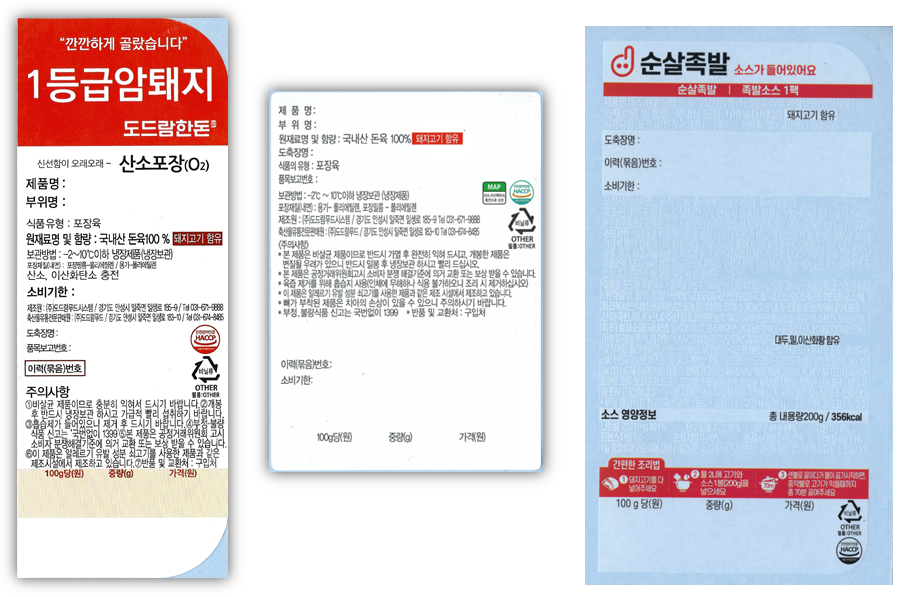
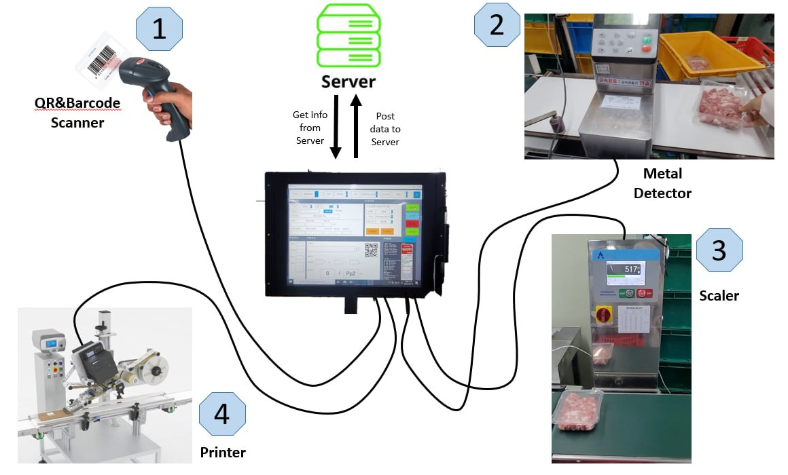
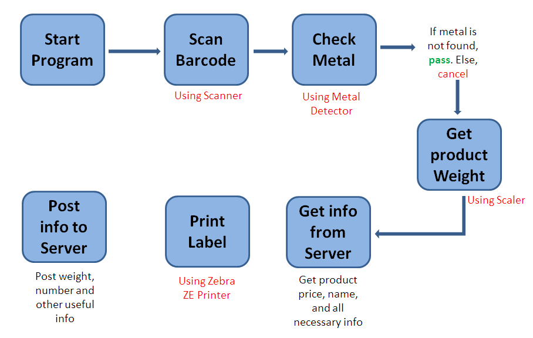
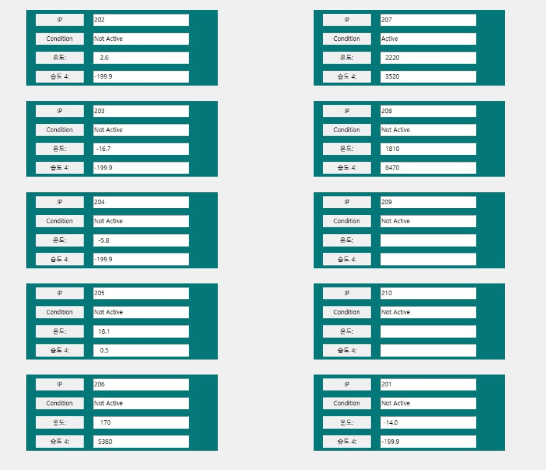
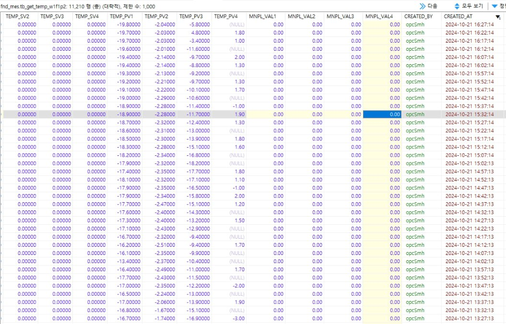
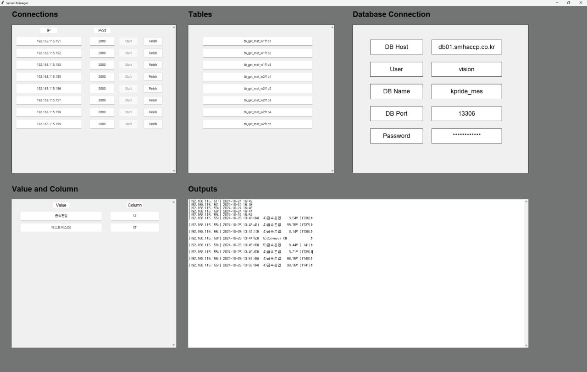
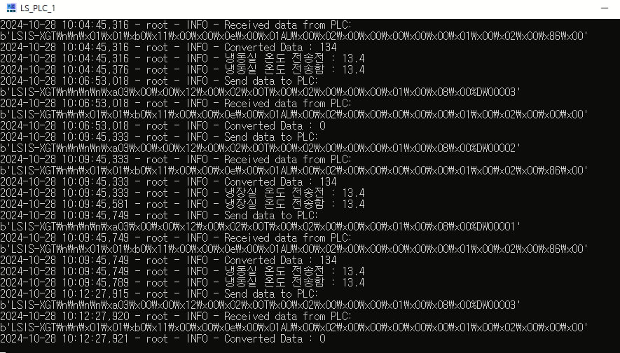

Figure 1. Labels
Video 1. Auto Label Printer

Figure 2. Connections with Server and Hardware devices

Figure 3. Working process of Auto Label Printer program

Figure 4.1. Data Collector 2. Collecting Temperature and Humidity

Figure 4.2. MySQL Data base view of Temperature and Humidity Collector

Figure 5. Data Collector 2

Figure 6. Data Collector 3
The Auto Labeling Project automates the labeling process for products by integrating weight data and other essential details. This project supports various label types, such as those shown in Figure 1.
The Label Printer Program is designed to print critical information on each label, including:
제품명 (Product Name),
부위명 (Part Name),
소비기한 (Expiration Date),
도축장명 (Slaughterhouse Name),
품목보고번호 (Item Report Number),
이력(묶음)번호 (Tracking Batch Number),
100g당(원) (Price per 100g),
중량(g) (Weight in grams),
가격(원) (Price in Won).
The label printing process in action can be viewed in Video 1, demonstrating how these values are accurately printed onto each label.
The program interfaces with four types of hardware devices: QR & Barcode Scanner, Metal Detector, Scaler, and Printer (illustrated in Figure 2). Here is the step-by-step process:
1. Start: The process begins when the user taps the "Start" button.
2. Scanning: The QR or Barcode Scanner reads the product code.
3. Metal Detection: The Metal Detector inspects incoming boxes. If no metal is detected, the boxes proceed; otherwise, they are removed from the line.
4. Weighing: The Scaler captures the box weight.
5. Data Retrieval: The system retrieves product details, including price, name, and other essential information, from the Database Server.
6. Label Printing: All necessary details, such as product name, price, and weight, are printed on the label.
7. Final Post: The program posts weight, quantity, and other useful data to the Database Server for record-keeping and future reference (as shown in Figure 3).
This application is designed to capture and monitor the temperature and humidity levels of various products using a socket connection (illustrated in Figure 4.1), it gathers real-time data, which is then systematically stored in a MySQL database for efficient tracking and future analysis (Figure 4.2).
*Please excuse me, I can not share the source codes and detailed information about the project due to company copyrights*